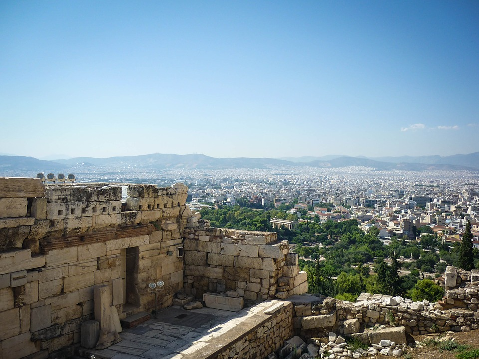
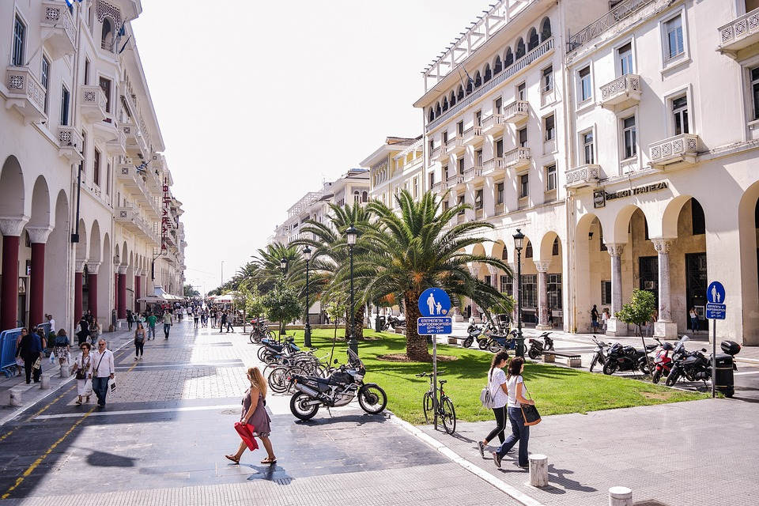
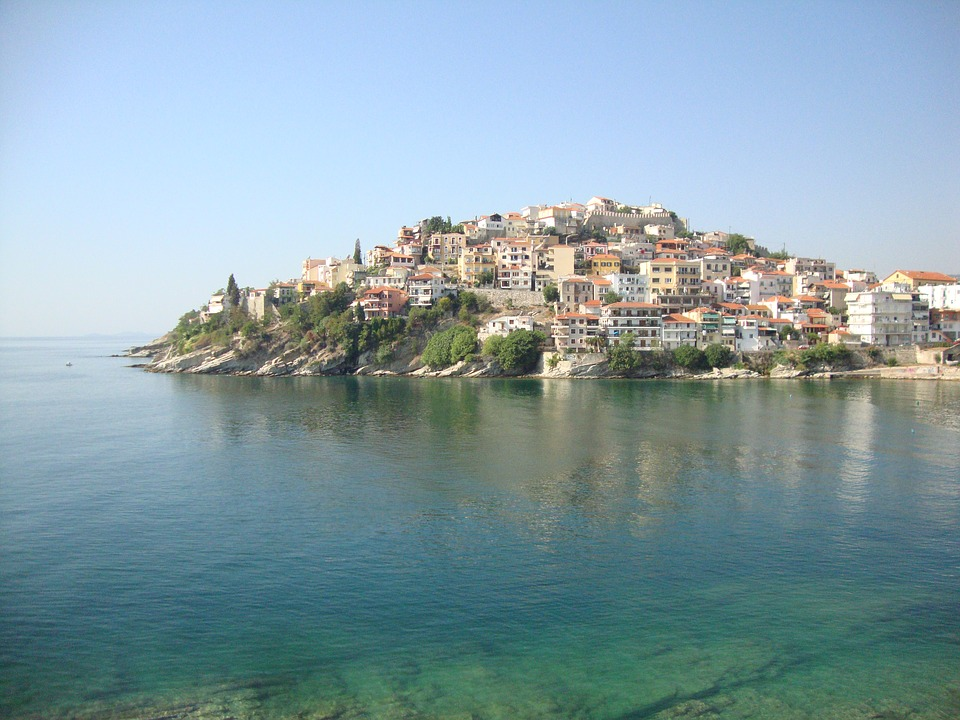
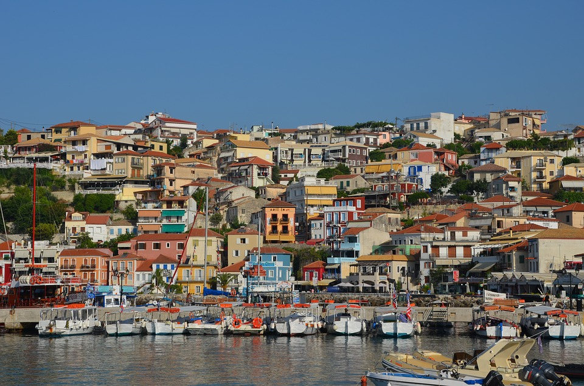

.jpg)
Atena, unul dintre leagănele civilizației. Capitala Greciei si un oraș cu o istorie bogata, Atena are mai multe obiective turistice cunoscute in toata lumea. Acropolele, portul Pireu, Parthenonul, temple nenumărate, grădini publice, dar si cluburi si restaurante sau piețe unde totul se negociază - toate se găsesc in Atena. Un obiectiv mai puțin cunoscut din Atena, dar cu un farmec aparte, este boemul cartier Plaka, situat in imediata apropiere a sitului Acropole si pana la bazarul Monastiraki, unde poți găsi tot felul de lucrușoare pe care sa le cumperi la preturi negociate cu vânzători. Plaka este înțesat de cafenele, restaurante si localuri, iar daca ajungi in Atena, este aproape imperativ sa petreci o după-amiaza doar plimbându-te prin acest cartier. Atena este nu doar un centru economic al tarii, ci si un oraș viu, unde poți observa doar plimbându-te pe strada măreția civilizației grecești. In plus, spre deosebire de insule, pe care le poți vizita doar vara, in Atena poți merge oricând, vremea este plăcută pe întreg parcursul anului, chiar si iarna înregistrându-se temperaturi pozitive, in jur de 10 grade Celsius.
Salonic, orasul prin care au trecut Cicero, Cleopatra, dar si Suleyman Magnificul. Salonic, al doilea cel mai important oras al Greciei, este o asezare cu o istorie la fel de bogata ca a Atenei. Pe aici au trecut de-a lungul veacurilor personalitati importante ale omenirii, de la Cicero si Cleopatra pana chiar la Suleyman magnificul, din ordinul caruia s-a ridicat si unul dintre cele mai importante edificii din oras - Turnul Alb. Poti ajunge in Salonic cu avionul sau cu masina. Drumul cu masina sau autocarul dureaza circa 9 ore. Odata ajuns aici, merita sa bifezi: Turnul Alb, Biserica Agia Sofia, Forumul Roman, Biserica Sfantul Dumitru, dar si Muzeul de Arheologie sau Muzeul Culturii Bizantine.
Kavala, micul Monte Carlo al Greciei Orasul Kavala a fost poreclit micul Monte Carlo datorita asemanarii cu celebra statiune de pe Coasta de Azur. Este un oras numai bun de luat la pas din port si pana in fortareata bizantina, situata in varful colinei care guverneaza orasul. De neratat in Kavala este si situl arheologic Philippi. In Kavala se poate ajunge cu avionul (pe aeroportul Alexandru cel Mare) sau cu masina, drumul de la Bucuresti pana acolo fiind de 8 ore.
Parga, oaza din Epir Un oras in nord vestul Greciei, in regiunea Epir, si o destinatie mai putin cunoscuta decat Atena sau faimoasele insule, Parga este o adevarata oaza paradisiaca ce aduce aminte de Amalfi sau Cinque Terre pe alocuri. Casele colorate si marea de un albastru intens fac din Parga o destinatie romantica perfecta pentru cupluri in luna de miere. Desi peisajele superbe te duc cu gandul la insulele grecesti, Parga se afla in Grecia continentala si se poate ajunge relativ usor cu masina din Romania. Drumul din Bucuresti pana in Parga are aproape 1000 de km si dureaza circa 12 ore. Odata ajuns aici, merita sa vezi castelul venetian din Parga, sa faci scufundari in pesterile Afroditei, sa faci rafting pe raul Acheron sau sa te bucuri de soare pe plajele Lichnos si Valtos.
